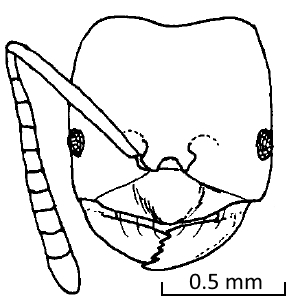
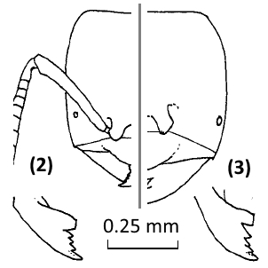
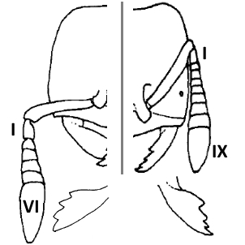

Acropyga Genus


- India, Sri Lanka, Indonesia, Malaysia, Singapore, China, Papua New Guinea, the Solomon Island, Australia

- (1) South-East China, Hainan
(2) Japan (Mikura-jima Is., Shikoku, Kyushu, Yaku-shima Is, Nansei Is.
(3) China (Jiangxi, Guangxi, Hainan Is.)

-
(1)A. jiangxiensis
(2)A. nipponensis
(3)A. baodaoensis

sauteri(right)
- China, Japan, Taiwan